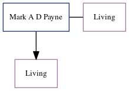

Mark A D Payne
[ Home ] | [ Calendar ] | [ Surnames Index ] | [ Errors ] | [ Family History ]Mark Payne, the husband of Karon Deborah Hards (the first cousin once-removed on the mother's side of Nigel Horne), and married Karon (with whom he had 1 surviving child, ) at St Mary's Church, Wingham, Kent, England in Mar 19951.
Citations
- England & Wales, Marriage Index: 1916-2005 Online publication - Provo, UT, USA: The Generations Network, Inc., 2009.Original data - General Register Office. England and Wales Civil Registration Indexes. London, England: General Register Office. © Crown copyright. Published by permission of the Cont
Family Tree
Map
Generated by ged2site. Last updated on Jul 3, 2024